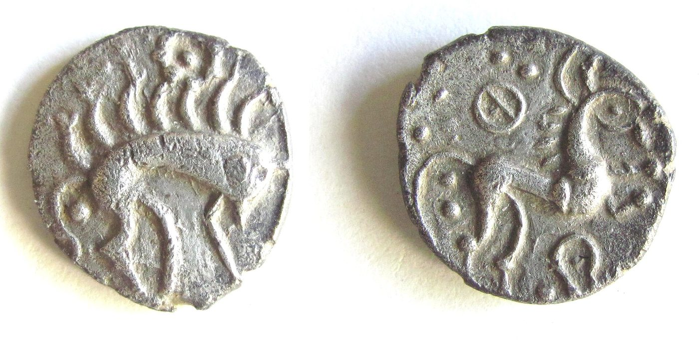
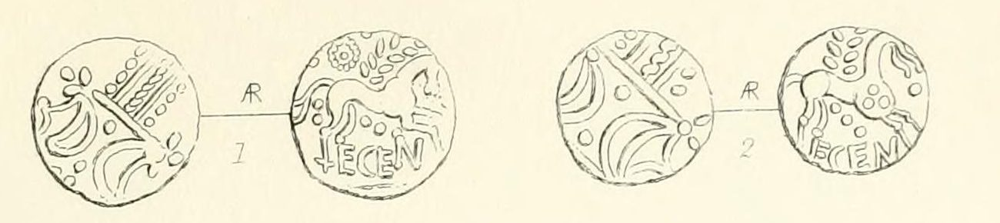
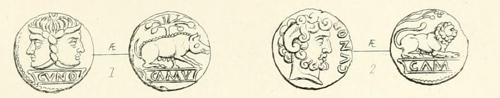
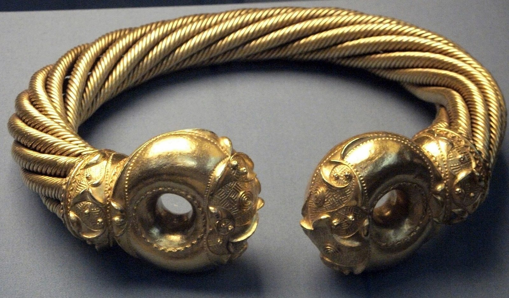

Unit 4 · Boudicca · Lesson 1
Celtic Britain and the Iceni
Who lived in Britain before the Romans came, and how do historians know where the Iceni lived, when the Iceni left no books of their own?
Year 11 Ancient History · Present with → or space · Read on a phone with R

Connect · 3 minutes · books closed · everyone writes · press K for the timer
Tacitus again: reliable for what?
From Unit 3, Lesson 5: name one thing Tacitus’s Germania is reliable evidence for, and one it is not.
Rewrite it so the claim matches the evidence:
“Tacitus’s Germania proves that Tollund Man was punished for cowardice.”
Roman views of Germanic customs and punishments in about 98 CE, when Tacitus wrote it.
why any one bog body died: Tollund Man died about 500 years before Tacitus wrote, and Tacitus passed on an account he had received.
Tacitus’s Germania suggests that some Germanic peoples put offenders into bogs, but it cannot show why Tollund Man died, about 500 years before Tacitus wrote.
Today Tacitus is our main writer again: his Annals give the earliest detailed Roman account of Boudicca’s revolt.
Learning intentions and success criteria · 2 minutes
Today’s goals
- understand how Late Iron Age Britain was organised and where the Iceni lived
- deconstruct a question and explain how historians identify the Iceni
- describe the tribal organisation of Late Iron Age Britain
- deconstruct a question: verb, topic, limits, what the answer must do
- explain how historians identify the Iceni and their culture, and the limits of the evidence
Syllabus outcomes: AH-11-03 explains the role and significance of forces, features, events, individuals and groups in shaping the past · AH-11-05 analyses different types of sources for evidence to support a historical account or argument · AH-11-07 communicates historical understanding, applying historical knowledge, terms and concepts. Life Skills: AH-LS-05 describes features of places or societies in the ancient world · AH-LS-11 communicates information about the past using historical terms and concepts.
Note-making · the routine for the whole course
How to structure your notes
questions and key terms, written after
short phrases, arrows (→ leads to), abbreviations (c. = about; BCE = Before the Common Era)
- 1A new unit, a new pageA cue column about a quarter of the page wide; title and date at the top; room for a summary at the bottom.
- 2Listen and look, then writeDon’t copy while a slide is being explained. Phrases, not sentences; a source for every claim.
- 3Write your own notes at each ✎ checkpointThen compare with the model notes, one row at a time. Add what you missed in a second colour.
- 4Write the cue questions afterwardsUse exam verbs: describe, explain, assess. To revise, cover your notes and answer the cues.
- 5Finish with a three-sentence summaryTwo checkpoints today: peoples and the Iceni · evidence for Iceni culture.
Key vocabulary · start the unit word wall
Words you will use all unit
| Verb (NESA) | Meaning · what the answer does |
|---|---|
| Describe | ‘Provide characteristics and features.’ — The answer shows what something was like. |
| Explain | ‘Relate cause and effect. Make the relationships between things evident. Provide why and/or how.’ — The answer shows causes, links and reasons. |
| Added today | Meaning |
| Enclosure | An area marked off by a ditch, a bank or a fence. |
| Mint | A place where coins are made. |
| Legend (on a coin) | The letters or words on a coin, such as ECEN. |
| Content terms | Meaning |
|---|---|
| Iron Age | In Britain, roughly 800 BCE to the Roman conquest of 43 CE, when iron tools and weapons were in use. |
| Celts | A name Greek and Roman writers gave to many peoples of western Europe; how far the Britons saw themselves as one people is debated. |
| Iceni | The people of Norfolk and parts of Suffolk and Cambridgeshire, ruled by Prasutagus and then led by Boudicca. |
| Trinovantes | The people of Essex, whose land, most historians think, was taken for the Roman colony at Camulodunum. |
| Torc / hoard | A metal neck ring, often of gold and silver; who wore torcs is debated / valuables buried together, for safekeeping or as an offering. |
1 · Peoples of Iron Age Britain · I do — an illustrated mini-lecture with the map
Many peoples, many rulers, often rivals
- 1Many peoples, not one nationGreek and Roman writers called peoples of mainland Europe ‘Celts’, but the people of Britain Britanni (Britons). Britain was divided among many separate peoples, such as the Iceni, Trinovantes, Catuvellauni and Brigantes.
- 2Kings, a queen and noblesCunobelinus ruled the Trinovantes and Catuvellauni, just north of the Thames, from about 10 CE; Cartimandua was queen of the Brigantes; Prasutagus was king of the Iceni under Roman rule.
- 3Often rivalsIn 54 BCE, Caesar says, a rival leader, Cassivellaunus, had killed the king of the Trinovantes; Dio says the Catuvellauni ruled part of a neighbouring people.
The Britons were not free and independent, but were divided into groups under various kings.
Cassius Dio (about 155–235 CE), a Roman senator and historian, Roman History 60.20, describing the Roman invasion of 43 CE · trans. E. Cary (Loeb, 1924)
1 · Peoples of Iron Age Britain · I do — how the Iceni are identified · then cold call
How do historians know where the Iceni lived?
The Iceni, a powerful tribe, which war had not weakened, as they had voluntarily joined our alliance, were the first to resist.
Tacitus (about 55–120 CE), a Roman senator and historian, Annals 12.31 · trans. A. J. Church and W. J. Brodribb (1876) · the Iceni resist the governor’s order to disarm
What does Tacitus tell us about the Iceni, and what does he not tell us?
Their name; that they were powerful, had joined Rome’s alliance by choice, and were the first to resist in 47 CE. He does not say where they lived.
- 2Clue 2 · the coinsFinds of Iceni coins cluster in Norfolk, north Suffolk and fenland Cambridgeshire. Some of the last ones carry letters: ECEN or ECE.
- 3Match the name to the placeA Roman name with no place + coins with a place → the Iceni lived where the coins are found.
- 4A later clueAfter the revolt, the Roman town near Norwich, whose founding date is debated (the 70s CE is one estimate), was called Venta Icenorum: ‘Venta of the Iceni’ in Latin.
- 5What is missingNo Iceni texts survive: only short coin legends such as ECEN. Everything else they ‘said’ comes to us through Roman writers.
1 · Peoples of Iron Age Britain · I do → cold call · what a coin can and cannot tell us
What can a coin tell us, and what can it not?


Compare the two pairs of coins. What can coins tell a historian, and what can they not?
| A coin can tell us | A coin cannot tell us |
|---|---|
| where coins were used and lost (find-spots) | what the people called themselves |
| roughly when (by type, and by the hoards they are found in) | whether ECEN is the people’s name or a person’s: historians disagree |
| that someone could organise silver and a mint | how the Iceni were ruled, or by whom |
| sometimes a ruler and a mint: CVNO and CAMV | what people thought or believed: the images hint, but do not explain |
… that it bears reference to the tribe of the Iceni, assuming that to have been really the name of the tribe.
John Evans, The Coins of the Ancient Britons (1864), p. 384
It is not known if the LIA [Late Iron Age] people of the region recognised themselves as part of a single tribe or grouping, and if they did, whether they called themselves Iceni.
J. A. Talbot, What is Icenian coinage? (Oxford doctoral thesis, 2015), p. 5
Notes checkpoint 1 of 2
Peoples of Late Iron Age Britain and the Iceni
2 · Evidence for Iceni culture · We do · See – Think – Wonder · 3 minutes
Look closely. What could this be?

Images: Johnbod (CC BY-SA 3.0). Full details on the last slide.
only what is really there
many twisted strands, like rope · two thick ring-shaped ends with patterns · a gap between the ends · shiny and yellow
what it might be, and how sure you are
gold (fairly sure) · worn round the neck (fairly sure) · owned by someone rich or important (guess) · very skilled work (sure)
questions you want answered
Who wore it, and when? · How was it made? · Why was it buried, and where was it found?
2 · Evidence for Iceni culture · We do — the reveal · then cold call
The Great Torc from Snettisham
- Found: 1950, when a field at Ken Hill, Snettisham, in north-west Norfolk, was ploughed
- Made: just over a kilogram of gold mixed with silver; 64 threads, twisted eight at a time into 8 ropes; hollow ends cast in moulds
- Not alone: at least 14 hoards at Ken Hill, with over 60 complete or near-complete torcs
- Dated by coins: coins in some hoards suggest most were buried around 60 BCE; many torcs had been worn and repaired for years before that
What does the torc suggest about the people who made it?
Highly skilled metalworkers, with access to gold and silver, who buried valuable objects together at one place. Who wore torcs is less certain: the researchers say “It is impossible now to know for certain”, but the range of sizes suggests torcs were worn by many kinds of people, including the young.
Can we call it an Iceni torc?
Only by inference. It was buried in the 1st century BCE (most Snettisham hoards around 60 BCE), about a century before the first certain mention of the Iceni (Tacitus, on events of 47 CE), in the area where Iceni coins are later found. It is evidence of the people of north-west Norfolk, whatever they called themselves.
2 · Evidence for Iceni culture · We do — list the possible answers and the evidence each would need
Fison Way, Thetford: what was it for?
- Dug 1980–82: three phases, from perhaps the 4th century BCE to the 60s CE
- About 40–50 CE: an enclosure around one circular building; nearby, moulds from a mint for silver coins, and about sixty probable graves (no remains survived)
- About 50–65 CE (NHER’s dating): rebuilt far larger, with “massed fences, up to nine deep”; then dismantled
What might it have been for? For each answer, what evidence would it need?
| A possible answer | It would need evidence of … |
|---|---|
| a royal home, a ‘palace’ | daily life: hearths, household rubbish, food waste; rich personal objects |
| a religious site | offerings or special deposits; a layout made for ritual, not for living |
| a meeting place for the people | large open spaces; entrances built for crowds |
| a mint or workshop | coin moulds, crucibles and metalworking waste |
The Norfolk Heritage Explorer lists it as a temple; Talbot (2015) calls it “a ritual site”. A 1982 headline called it ‘Boudica’s palace’, but the excavator rejected that idea: he found no signs of daily living and few imported luxuries. No text says what it was for, so its exact function is still debated.
Notes checkpoint 2 of 2
Evidence for Iceni culture, and its limits
3 · You do · Writing focus · 8 minutes · I do → We do → apply
Writing focus: read the verb before you write
Explain: ‘Relate cause and effect. Make the relationships between things evident. Provide why and/or how.’ NESA, Glossary of key words
Explain how historians date the Snettisham hoards.
- Verb
- explain: show how and why, with the links stated
- Topic
- how historians date the hoards
- Limits
- Snettisham only; when the hoards were buried, not when each torc was made
- Do
- name the evidence, show how it gives a date, and say which link matters most
Worked example · written for this lesson
Historians date the Snettisham hoards mainly by the coins buried in some of them, because a coin gives the earliest date at which the hoard around it could have been buried, whereas many of the torcs were worn and repaired for years, so a torc may be much older than the hoard it lies in.
Deconstruct it, then say how its answer would differ from an explain answer.
Describe the Great Torc from Snettisham.
- Verb
- describe: ‘Provide characteristics and features.’ What was it like?
- Topic
- the Great Torc itself
- Limits
- one object, from Snettisham; not the other hoards, not the Iceni in general
- Do
- its features in a clear order: material, how it was made, its shape and ends, where and when it was found
A describe answer says what the torc is like: no causes, no judgement. An explain answer shows how and why, linking evidence to what it shows.
Deconstruct your own question first: verb · topic · limits · do. Then begin with the frame “Historians identify … by …, because …” Stage 6: show which link matters most: “Of these, … matters most, because …” Your Writing toolkit (booklet pages 3–4): the directive verbs.
3 · You do · 5 minutes · then check · press K for the timer
Annotate the map in your booklet
- Label the five peoples. Shade the Iceni.
- Mark Camulodunum, Snettisham and Fison Way (Thetford).
- Beside the Iceni: how do we know they lived here? Two kinds of evidence.
- For the Trinovantes, Catuvellauni and Brigantes: one ruler or rivalry, with its source.
Use the labelled map and your Notes 1. Word bank:
Add one thing this map cannot show, and say why.
3 · You do · 11 minutes · deconstruct first · then write · press K for the timer
Explain how historians identify the Iceni and their culture.
Deconstruct it: what does this question ask you to do?
- Verb
- explain: how and why, with the links stated, not a list of evidence
- Topic
- how historians identify two things: the Iceni, and their culture
- Limits
- the Iceni in Late Iron Age Britain; the evidence historians use
- Do
- for each kind of evidence, show how it links the people to a place or a way of life; say which link matters most; name a limit
- Start with the frame: “Historians identify … by …, because …”
- Use two kinds of evidence for where the Iceni lived, and one for their culture.
- Say which link matters most, and name one limit of the evidence.
Evaluate the Fison Way evidence: why might 1980s press reports have called it ‘Boudica’s palace’, and what evidence would that reading need?
Check first: what turns a list of evidence into an explanation?
Links. Each piece of evidence is joined to what it shows with because, so or which means that: not “Tacitus, coins, torc”, but how the coins give a Roman name a place.
Frame for your first sentence: “Historians identify the Iceni by …, because …” Then join each piece of evidence to what it shows with because, so or which means that. Use your notes checkpoints and the word bank.
3 · You do · after you write · compare yours with a model
A model answer: how historians identify the Iceni
Historians identify the Iceni by matching Tacitus’s name for them to the places where coins inscribed ECEN are found, because, apart from short coin legends, the Iceni left no writing. Tacitus calls the Iceni a powerful people who had ‘voluntarily joined our alliance’ (Annals 12.31), but he never says where they lived; the coins supply the place, since finds of Iceni coins cluster in Norfolk, north Suffolk and fenland Cambridgeshire. Iceni culture is identified in the same way, by linking objects from that region to the people: the Great Torc from Snettisham shows skilled metalworkers working gold and silver, and the moulds at Fison Way show that silver coins were still being made there in about 40–50 CE. Of these links, the coins matter most, because they join a Roman name to a place on the map. Yet each link is an inference: the Snettisham hoards were buried about a century before the first certain mention of the Iceni, and historians still debate whether ECEN is the people’s name or a person’s, so we cannot be sure the people of the region called themselves Iceni at all.
Finish your notes If time · or at home
Summary: three sentences
- How was Late Iron Age Britain organised?
- How do historians identify the Iceni and where they lived?
- What does the evidence show about Iceni culture, and what are its limits?
Late Iron Age Britain was divided among many separate peoples, such as the Iceni, Trinovantes, Catuvellauni and Brigantes, ruled by kings and at least one queen and often at war with each other. Historians place the Iceni in Norfolk, north Suffolk and fenland Cambridgeshire by matching the name Tacitus gives them to the area where their coins are found. Objects such as the Great Torc from Snettisham and the mint moulds at Fison Way show a wealthy, skilled people, but no Iceni texts survive, so we do not know what they called themselves or how they were ruled before the Romans.
Check · the unit question · 3 minutes · everyone writes · keep it
Why did the revolt of 60 or 61 CE happen?
Write your first judgement now, before you have studied the evidence. Keep it: in Lesson 16 you test it against everything you have learned.
“The revolt of 60 or 61 CE probably happened mainly because …”
names one main cause (“mainly because …”), is hedged (“probably”), because you have not seen the evidence yet, and is one sentence you can test later. Any cause is fine today: the point is to commit, then check.
Exit ticket · 4 minutes · before you leave
Finish both halves
“Explain asks me to …; describe asks me to …”
Explain: show how and why, linking causes and effects, or evidence and what it shows (NESA: ‘Make the relationships between things evident.’). Describe: give the characteristics and features of something, what it was like, with no cause or judgement needed.
Then check yourself against today’s three “I can” statements. Next lesson: the Roman conquest of Britain and ‘Romanisation’.
Practice and review · 1 of 4 · true, false, justify
True or false? Justify your answer
- 1Tacitus tells us where the Iceni lived. False — he names them and calls them powerful (Annals 12.31), but does not locate them; the coin finds do.
- 2Finds of Iceni coins cluster in Norfolk, north Suffolk and fenland Cambridgeshire. True — Talbot (2015), from all recorded finds; that is how the Iceni are placed on the map.
- 3Historians agree that ECEN on the coins is the name of the people. False — it is often assumed (Evans, 1864), but others read it as a person’s name; it is debated.
- 4The Great Torc was found by archaeologists digging at Fison Way. False — it was found when a field at Ken Hill, Snettisham, was ploughed in 1950.
- 5The large Fison Way enclosure was taken apart after a short life, by the mid-60s CE (the Norfolk Heritage Explorer’s dating). True — its last phase ran from about 50 to the mid-60s CE; then the structures were dismantled (NHER 5853; the finds alone allow the 60s or 70s CE).
- 6Before the Romans came, Britain was one kingdom under one ruler. False — Dio says the Britons were “divided into groups under various kings”, and they were often rivals.
Practice and review · 2 of 4 · writing · deconstruct each question first
Same evidence, different verbs
Describe the Fison Way enclosure in its last phase, about 50 to the mid-60s CE (the Norfolk Heritage Explorer’s dating). (3 sentences)
In its last phase the Fison Way enclosure at Thetford was huge, about 215 metres by 165 metres, with an entrance in the middle of its east side. Rows of fences, up to nine deep, filled the space between its outer and inner ditches, and a corridor of upright timbers led to a massive gateway into the inner enclosure. Inside, beyond about 80 metres of open space, stood five circular buildings, all facing the entrance.
Explain how the moulds found at Fison Way help historians link the site to the Iceni, and what they cannot show. (3 sentences)
The moulds link Fison Way to the Iceni mainly because they are pellet moulds from a mint, found in a ditch of about 40–50 CE, so silver coins of the kind found across the Iceni area were being made there. This places coin-making, and so some organised authority, at Thetford in the decade or two before the revolt. However, the moulds cannot show who ran the mint, what the later, larger enclosure was for, or whether the people there called themselves Iceni.
Practice and review · 3 of 4 · extension · evaluate
Was Fison Way ‘Boudica’s palace’?
Enclosure may have been for Boadicea.
The Times, 10 August 1981
Boudica's palace in unearthed.
The Guardian, 16 March 1982 (the headline as listed, with its error)
Evaluate the Fison Way evidence: why might 1980s press reports have called it ‘Boudica’s palace’, and what evidence would that reading need?
Judged by what a palace would leave behind, the ‘Boudica’s palace’ reading of Fison Way is weak. The press link is understandable: the enclosure was enormous, it stood in the area where Iceni coins are found, and it was rebuilt in about 50 CE and dismantled by the mid-60s CE (the Norfolk Heritage Explorer’s dating), so it was in use in the years leading up to the revolt. But a palace would need evidence of daily royal life, such as hearths, household rubbish and rich personal objects, and something that tied the site to one ruler; size and timing alone show neither. Indeed, the excavator rejected the palace idea because he found no signs of daily living. The excavation instead found five circular buildings behind fences up to nine deep, and earlier moulds from a mint; the Norfolk Heritage Explorer records that the form of the enclosure suggested a temple, and Talbot calls it a ritual site. On balance, ‘Boudica’s palace’ is best treated as a headline, not a conclusion, although no text tells us for certain what the enclosure was for.
Practice and review · 4 of 4 · cover your notes and answer from memory
Quick checks
- Name four peoples of Late Iron Age Britain and where one of them lived. Iceni, Trinovantes, Catuvellauni, Brigantes (also the Corieltauvi); for example, the Trinovantes in Essex, the Brigantes in northern England, centred on Yorkshire.
- Name one ruler of a British people before or soon after 43 CE. Cunobelinus (the Trinovantes and Catuvellauni, from about 10 CE); Cartimandua, queen of the Brigantes; Prasutagus, king of the Iceni under Roman rule.
- What are the two main clues to where the Iceni lived? A Roman name (Tacitus, Annals 12.31) and the find-spots of their coins (Norfolk, north Suffolk, fenland Cambridgeshire).
- Why is ECEN debated? It is often read as the people’s name (Evans, 1864), but some historians read it as a person’s name; no Iceni text explains it.
- What does the Great Torc suggest about its makers, and what is its limit as evidence of ‘the Iceni’? Highly skilled metalworkers with gold and silver; but it was buried about a century before the first certain mention of the Iceni (Tacitus, on 47 CE), so the link is by place, not by name.
- What does describe ask for, and what does explain ask for? Describe: characteristics and features. Explain: how and why, with cause and effect or links made evident.
Sources and credits
Where everything comes from
Tacitus, Annals 12.31–32, 12.36, 12.40 and 14.31: trans. A. J. Church and W. J. Brodribb (1876, public domain), Perseus Digital Library (CC BY-SA 3.0 US). Caesar, Gallic War 5.20–21: trans. W. A. McDevitte and W. S. Bohn (1869), Perseus. Cassius Dio, Roman History 60.20: trans. E. Cary (Loeb, vol. VII, 1924), LacusCurtius (public domain in the US; quoted briefly). Tacitus, Germania 12 and 27 (Connect): as in Unit 3, Lesson 5.
J. Evans, The Coins of the Ancient Britons (1864), p. 384, Internet Archive (public domain). J. A. Talbot, What is Icenian coinage?, DPhil thesis, University of Oxford (2015), Oxford University Research Archive (quoted briefly). Norfolk Heritage Explorer, NHER 5853, Fison Way and A. Gregory, Excavations in Thetford, 1980–82, Fison Way, East Anglian Archaeology 53 (1991). Western Australian Museum, “The Snettisham Great Torc”. University of Cambridge, Department of Archaeology, “The Snettisham Hoards” (2024; text CC BY 4.0).
Facts: Norfolk Archaeological Trust, “Caistor Roman Town”; University of Warwick, Warwick Classics Network, “Cartimandua and the Brigantes” and “Civitates and Client Kingdoms of Warwickshire”; Portable Antiquities Scheme record 621227; Amgueddfa Cymru – Museum Wales, “Who were the Celts?” (2021); Historic England, list entry 1021416. Map and plan drawn for this lesson; coastline and rivers from Natural Earth (public domain). The NESA Glossary of key words (definitions quoted word for word).
Outcomes and content: NSW Education Standards Authority (NESA), Ancient History 11–12 Syllabus (2024). © NESA.
- A silver coin of the Iceni (boar and horse), found in Norfolk; credit: The Portable Antiquities Scheme / The Trustees of the British Museum · Photo: Adrian Marsden (PAS) · CC BY-SA 2.0 · source
- Two silver coins reading ECEN, engraved for John Evans, The Coins of the Ancient Britons (1864), Plate XV · Engraving: F. W. Fairholt (1864) · Public domain · source
- Two bronze coins of Cunobelinus reading CVNO and CAMV, from Evans (1864), Plate XIII · Engraving: F. W. Fairholt (1864) · Public domain · source
- The Great Torc from Snettisham, Norfolk (British Museum, 1951,0402.2) · Photo: Johnbod · CC BY-SA 3.0 · source
.jpg){kind=link}

All images are public domain or openly licensed, and were resized or cropped for the web. Each is shared under the licence shown.